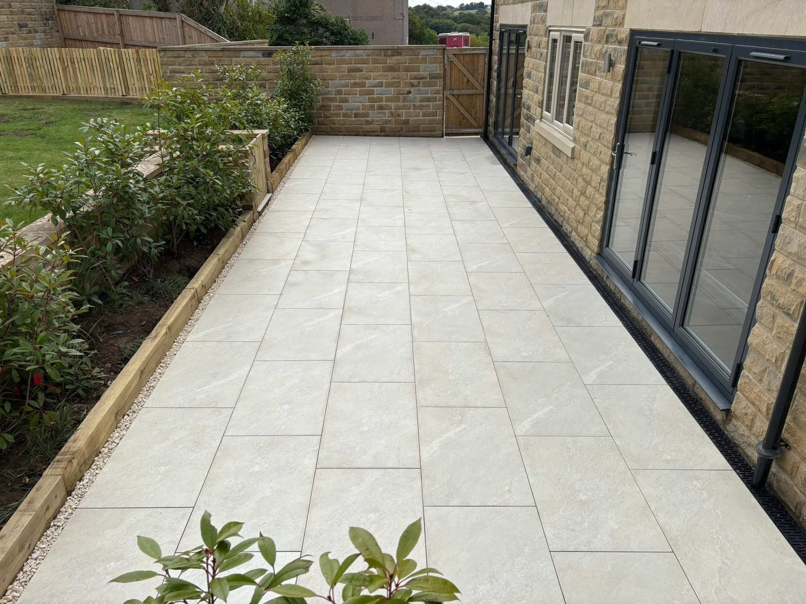
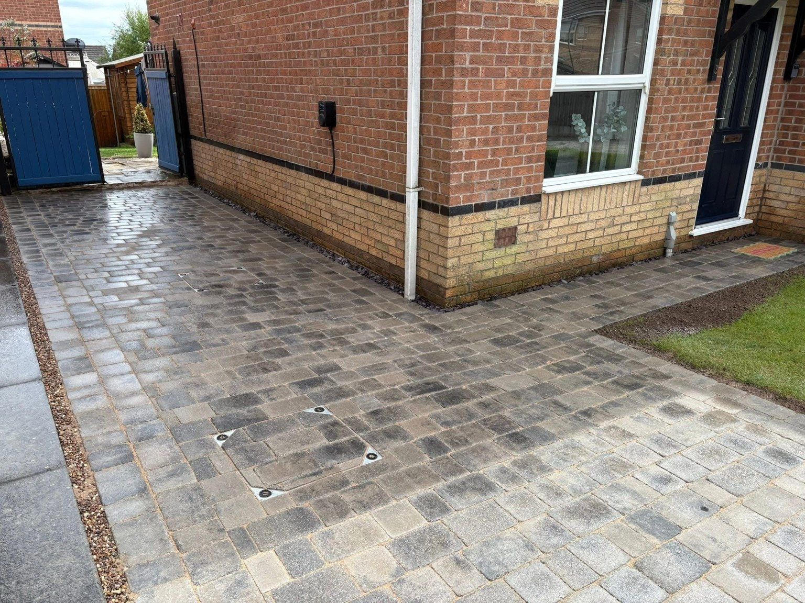
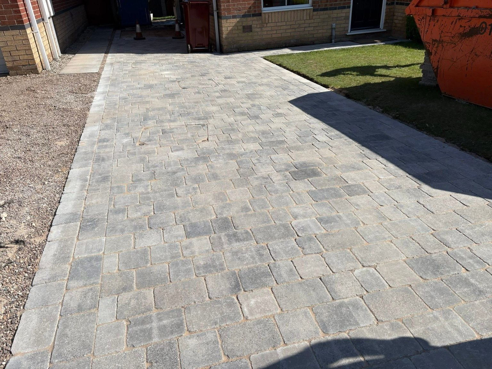
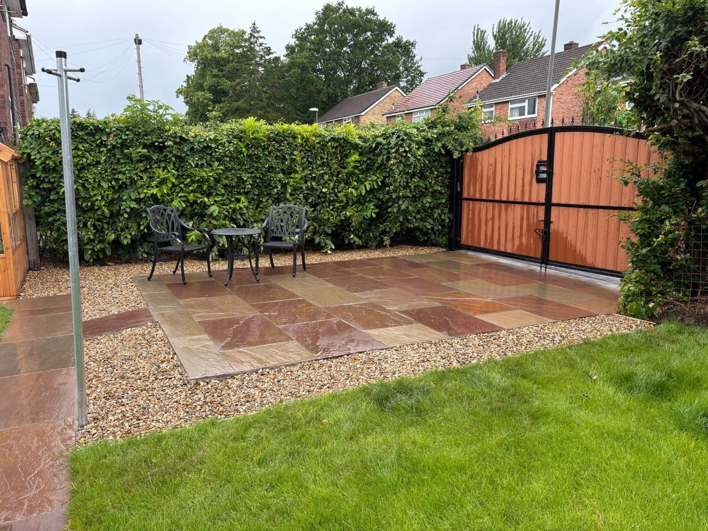
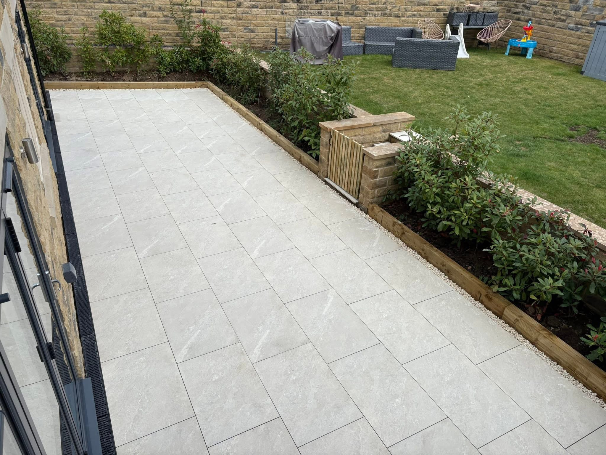
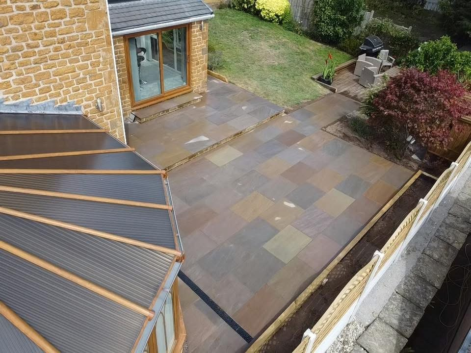
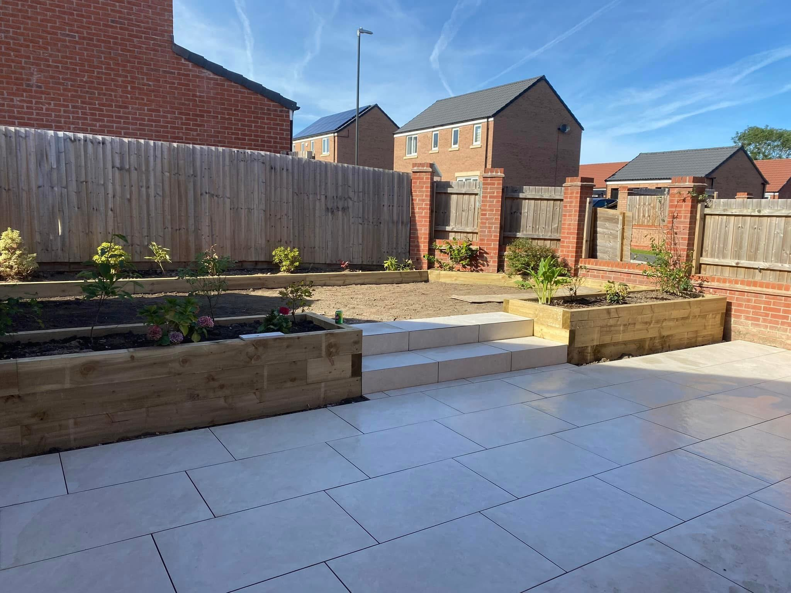

Chesterfield & surrounding areas · Patios & Paving in Chesterfield
Patios & Paving in Chesterfield
Patios and paving by Stuart Building Solutions in Chesterfield and surrounding listed areas. Explore pale paving, natural stone colours and stepped patios.
Patios & Paving in Chesterfield
Patios & Paving in Chesterfield
Make space to sit, eat and enjoy the garden with a patio planned around the property. Stuart Building Solutions undertakes patio and paving projects in Chesterfield, Mansfield, Matlock, Ashover and Bakewell. The work includes pale large-format paving and mixed natural stone colours.
Choose how you want to use the patio
Tell Stuart whether you want a seating area beside the house, a separate garden terrace or a paved route between spaces. Photos of the doors, boundaries and current ground levels help explain your plans.
Connect the paving with the garden
Recent work shows patios beside lawns and planting, broad steps and defined edging. Discuss the paving layout, level changes and the surrounding garden together so the scope covers the whole area you want to improve.
Request a quote →
Driveways & Patios & paving
Details that bring the space together.
Contrasting drive edges, garden steps and stone colours give each project its own character. Explore recent work and find ideas for your property.
Discuss your project →

RECENT WORK
Patios & Paving in Chesterfield in pictures.
Patios and paving by Stuart Building Solutions in Chesterfield and surrounding listed areas. Explore pale paving, natural stone colours and stepped patios.



Chesterfield & surrounding areas
Your local project starts with a conversation.
Stuart Building Solutions undertakes landscaping and building enquiries across the Chesterfield area, including Mansfield, Matlock, Ashover and Bakewell. Call or send your plans and postcode for a free quote.
Talk through the work before deciding the next step.
Driveways, patios, landscaping, fencing and decking.
Call, email or send photos and details on WhatsApp.
GOOD TO KNOW
Your questions answered.
What patio styles can I see?
The gallery includes pale rectangular paving and patios with varied natural stone colours. The project photos provide examples to discuss.
Can a patio include steps?
The portfolio shows stepped patios and garden level changes. Explain the access and levels you have in mind when requesting a quote.
Where is patio work available?
The listed areas are Chesterfield, Mansfield, Matlock, Ashover and Bakewell. Send your postcode to check coverage.
REQUEST A QUOTE
Tell us what you have in mind.
Send the details of your project and its location. WhatsApp opens with your enquiry ready to send, where you can also attach photos.
Stuart Building Solutions
Ready to discuss your project?
Chesterfield · Mansfield · Matlock · Ashover · Bakewell